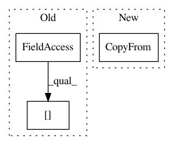

f22b843a42b1cd65e34ee7e70866145ceb98f15e,server/bert_serving/server/graph.py,,convert_variables_to_constants,#Any#Any#Any#Any#Any#Any#Any#,146
Before Change
output_node.CopyFrom(input_node)
dtype = input_node.attr["dtype"]
if use_fp16 and dtype.type == types_pb2.DT_FLOAT:
print("< %s | %s " % (input_node.name, input_node.attr["dtype"]))
output_node.attr["dtype"].CopyFrom(
attr_value_pb2.AttrValue(type=types_pb2.DT_HALF))
print("> %s | %s " % (output_node.name, output_node.attr["dtype"]))
After Change
shape=data.shape)))
else:
output_node.attr["dtype"].CopyFrom(dtype)
output_node.attr["value"].CopyFrom(
attr_value_pb2.AttrValue(
tensor=tensor_util.make_tensor_proto(data, dtype=dtype.type,
shape=data.shape)))
how_many_converted += 1
elif input_node.op == "ReadVariableOp" and (
input_node.input[0] in found_variables):
// placeholder nodes
In pattern: SUPERPATTERN
Frequency: 3
Non-data size: 3
Instances
Project Name: hanxiao/bert-as-service
Commit Name: f22b843a42b1cd65e34ee7e70866145ceb98f15e
Time: 2019-01-17
Author: hanhxiao@tencent.com
File Name: server/bert_serving/server/graph.py
Class Name:
Method Name: convert_variables_to_constants
Project Name: sony/nnabla
Commit Name: 699ce9a0d6e19852f5d6171f86265b718bc860f8
Time: 2021-03-01
Author: woody.li@sony.com
File Name: python/src/nnabla/core/graph_def.py
Class Name: ProtoNetwork
Method Name: as_proto
Project Name: hanxiao/bert-as-service
Commit Name: fcf410b626794b82309d6ffa609c21a22b41d397
Time: 2019-01-17
Author: hanhxiao@tencent.com
File Name: server/bert_serving/server/graph.py
Class Name:
Method Name: convert_variables_to_constants